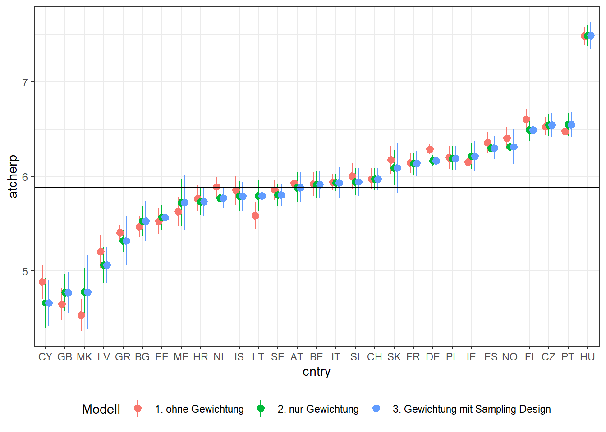
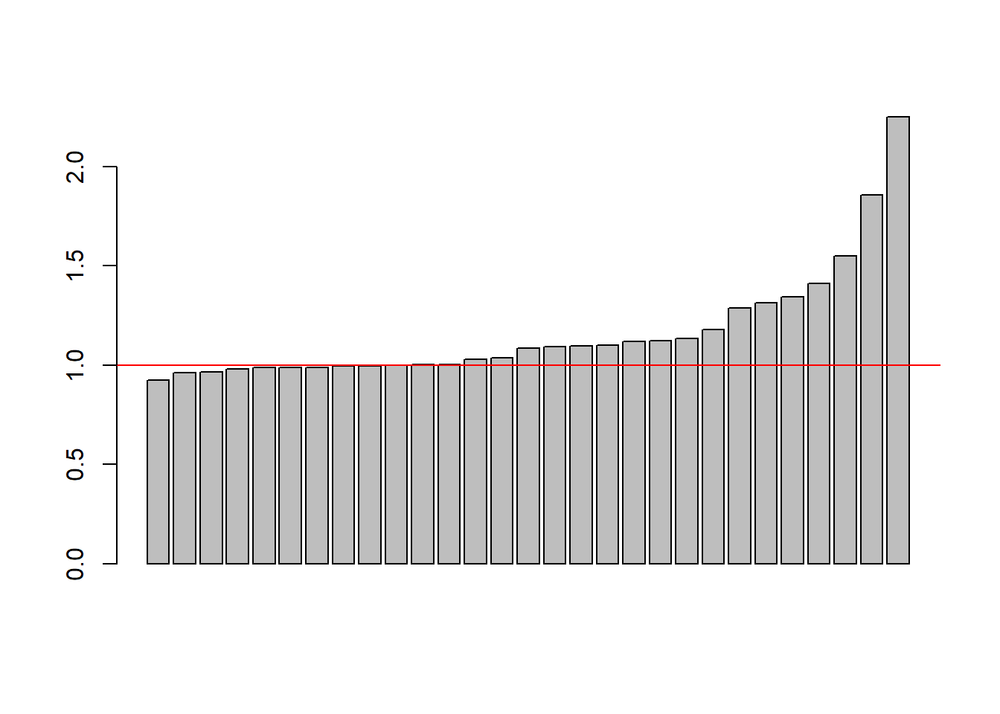

library(foreign)
allbus <- read.spss("./Daten/Allbus2021/ZA5280_v2-0-0.sav",
to.data.frame = TRUE,
use.value.labels = FALSE,
reencode = TRUE)6. Wie gewichten wir komplexe Stichproben in R?
Bevor es los geht, importieren wir zuerst die Datensätze.
library(foreign)
ess.i <- read.spss("./Daten/ESS10/ESS10.sav",
to.data.frame = TRUE,
use.value.labels = FALSE,
reencode = TRUE)
ess.sc <- read.spss("./Daten/ESS10/ESS10SC.sav",
to.data.frame = TRUE,
use.value.labels = FALSE,
reencode = TRUE)
# Zusammenführen
vars <- names(ess.i)[names(ess.i) %in% names(ess.sc)]
ess <- rbind(ess.sc[,vars], ess.i[,vars])
ess <- ess[!(ess$cntry %in% c("IL", "RS")),]Wie schon angekündigt, liegt die besondere Stärke des survey Paketes darin, dass auch komplexe Stichprobendesigns korrekt berücksichtigt werden können.
Dazu schauen wir uns die Funktion zum Erstellen des survey-Design Objektes noch einmal genauer an.
library(survey)
?svydesignHier sehen Sie, welche Argumente der Funktion übergeben werden können.
Wir können mit ids Cluster definieren, wir können mit probs Auswahlwahrscheinlichkeiten angeben, und wir können mit strata die Schichten des Samplings angeben. Das weights Argument kennen wir ja schon.
Versuchen wir nun, das kompelxe Stichprobendesign des ESS mit Hilfe der svydesign() Funktion zu spezifizieren.
Wie wir in Teil 2 gesehen haben, können die einzelnen Länder des ESS unterschiedliche Sampling-Strategien nutzen. Aber unabhängig von diesen Unterschieden sind alle notwendigen Informationen im Datensatz gespeichert:
psuenthält die IDs der Primary Sampling Units, wo Cluster-Sampling genutzt wurdestratumenthält die IDs der Schichtenprobenthält die Auswahlwahrscheinlichkeiten
Wenn wir jetzt das survey-Design Objekt definieren wollen, übergeben wir der svydesign() Funktion genau diese Variablen:1
library(survey)
ess_svy <- svydesign(ids=~psu,
strata = ~stratum,
#probs=prob,
weight=~anweight,
nest=TRUE,
data = ess)Wenn es im Sampling-Design vorkommen kann, dass Schichten nur einen Cluster enthalten, dann müssen wir das noch explizit in den Einstellungen erlauben:2
options(survey.adjust.domain.lonely=TRUE)
options(survey.lonely.psu="average")Jetzt können wir wieder ganz einfach die unterschiedlichen svy...() Funktionen nutzen: Hier zum Beispiel der Mittelwert:
# Dauert ein paar Sekunden...
svymean(~stfdem,
design=ess_svy,
na.rm = T) mean SE
stfdem 5.2424 0.0224#warnings()
# Die Warnungen weisen auf einzelne PSU pro Schicht hin Vergleich
Warum sollten wir immer wenn es möglich ist, das komplexe Stichprobendesign berücksichtigen?
Das wollen wir uns genauer anschauen. Dafür definiere ich drei verschiedene survey-Design Objekte:
- eines ohne Gewichtung und ohne komplexes Design
- eines nur mit Gewichtung
anweight - eines mit Gewichtung
anweightund komplexen Stichprobendesign
library(survey)
# Ungewichtet
ess_svy_0 <- svydesign(ids = ~1,
data = ess)
# Nur Gewichtung
ess_svy_1 <- svydesign(ids = ~1,
weights = ~anweight,
data = ess)
# Gewichtung mit Berücksichtigung des komplexen Samplings
ess_svy_2 <- svydesign(ids=~psu,
strata = ~stratum,
nest=TRUE,
weights = ~anweight,
data = ess)Als nächstes nutze ich die Funktion svyby(). Mit ihr kann ich gruppierte Mittelwerte anfordern. Hier für die Variable atcherp:
And how emotionally attached do you feel to Europe? 0 ‘Not at all emotionally attached’ … 10 ‘Very emotionally attached’
Als Gruppierungsvariable nutze ich die Länder (cntry).
Beide Variablen nutze ich nun in der svyby() Funktion:
svyby(~atcherp, by=~cntry, design=ess_svy_0, FUN=svymean, na.rm=T) cntry atcherp se
AT AT 5.928210 0.05935135
BE BE 5.920777 0.06475011
BG BG 5.466194 0.05605352
CH CH 5.973440 0.05790641
CY CY 4.887356 0.09286244
CZ CZ 6.528882 0.05050476
DE DE 6.287193 0.02762545
EE EE 5.526728 0.06806747
ES ES 6.356475 0.05553840
FI FI 6.604220 0.05207811
FR FR 6.143661 0.05610890
GB GB 4.650919 0.08347702
GR GR 5.404117 0.04432934
HR HR 5.767132 0.07108796
HU HU 7.482702 0.05184402
IE IE 6.152000 0.05652159
IS IS 5.852514 0.07665338
IT IT 5.939870 0.04368123
LT LT 5.588345 0.07485115
LV LV 5.204344 0.08805639
ME ME 5.629338 0.08008507
MK MK 4.536499 0.08409317
NL NL 5.890710 0.05359573
NO NO 6.401989 0.05931396
PL PL 6.199117 0.06294700
PT PT 6.474095 0.05672537
SE SE 5.857269 0.05348753
SI SI 6.002425 0.07121849
SK SK 6.173851 0.07434604Aber ich möchte mir die Ergebnisse speichern, um gleich eine Vergleichsgrafik zu erstellen. Also schreibe ich das Resultat in ein Objekt:
mw0 <- svyby(~atcherp, by=~cntry, design=ess_svy_0, FUN=svymean, na.rm=T) Und in diesem ergänze ich eine Variable, die enthält, welches Design ich nutze. Dann erstelle ich noch das 95%-ige Konfidenzintervall. Das bekomme ich, wenn ich vom berechneten Mittelwert um 1.96 Standardfehler nach oben gehen. Und für die untere Grenze, wenn ich vom Mittelwert 1.96 Sandardfehler nach unten gehe.
mw0$Modell <- "1. ohne Gewichtung"
mw0$ci_hi <- mw0$atcherp + (1.96*mw0$se)
mw0$ci_lo <- mw0$atcherp - (1.96*mw0$se)Und diese Schritte führe ich auch auf Basis der anderen beiden survey-Design Objekte aus:
mw1 <- svyby(~atcherp, by=~cntry, design=ess_svy_1, FUN=svymean, na.rm=T)
mw1$Modell <- "2. nur Gewichtung"
mw1$ci_hi <- mw1$atcherp + (1.96*mw1$se)
mw1$ci_lo <- mw1$atcherp - (1.96*mw1$se)
mw2 <- svyby(~atcherp, by=~cntry, design=ess_svy_2, FUN=svymean, na.rm=T)
mw2$Modell <- "3. Gewichtung mit Sampling Design"
mw2$ci_hi <- mw2$atcherp + (1.96*mw2$se)
mw2$ci_lo <- mw2$atcherp - (1.96*mw2$se)Danach fasse alle drei Datensätze zusammen und sortiere noch die Länder nach den Mittelwerten, damit es übersichtlicher wird:
df <- rbind(mw0, mw1, mw2)
df$cntry <- forcats::fct_reorder(df$cntry, df$atcherp)Jetzt kann ich die Vergleichsgrafik mit ggplot() erstellen:
library(ggplot2)
ggplot(df, aes(x=cntry, y=atcherp,
ymin=ci_lo, ymax=ci_hi,
color=Modell)) +
geom_pointrange(position = position_dodge(width = .5)) +
geom_hline(yintercept=mean(df$atcherp)) +
theme_bw() +
theme(legend.position="bottom")
Was sehen wir hier in der Grafik. Die Punkte sind der geschätzte Mittelwert je Land, gemeinsam mit dem 95%igen Konfidenzintervall. Die roten Punkte basieren jeweils auf den ungewichteten Daten. Die grünen Mittelwerte basieren auf den gewichteten Daten, und die blauen auf auf den gewichteten Daten und der korrekten Angabe des komplexen Stichprobendesigns.
Zunächst sehen wir, dass wir tatsächlich verzerrte Mittelwerte schätzen würden, wenn wir die Daten nicht gewichten. Deutlich sehen wir das für Zypern oder Nord-Mazedonien, aber auch Litauen und Deutschland. Außerdem können wir feststellen, dass die Konfidenzintervalle zum Teil deutlich größer sind.
Betrachten wir nun noch en Unterschied zwischen den gewichteten Mittelwerten und denen, bei welchen auch das Stichprobendesign berücksichtigt wird. Hier sind die geschätzten Mittelwerte zwar absolut identisch, aber wie wir sehen sind die Konfidenzintervalle und damit die Standardfehler in den meisten Fällen noch mal etwas größer.
Was bedeutet das? Nun, das bedeutet, das wenn wir das komplexe Stichprobendesign nicht korrekt berücksichtigen, wir die Standardfehler (auf diesen basieren ja die Konfidenzintervalle) unterschätzen!
Würden wir Sgnifikanztests auf Basis dieser Standardfehler berechnen, würden wir vorschnell von Signifikanten Effekten ausgehen, wo unter Umständen keine zu finden sind.
Wie groß die Unterschiede sind können wir uns auch nochmal anschauen, indem wir die Standardfehler ins Verhältnis setzen:
In einem viertel der Fälle ist der wahre Standardfehler also mehr als das 1,3-fache größer.
barplot(sort(mw2$se/mw1$se))
abline(h=1, col="red")
Ein weiteres Beispiel
Für das zweite Beispiel nutzen wir den Allbus und rechnen eine lineare Regression.
Als abhängige Variable verwenden wir ps03, die Frage nach der Demokratiezufriedenheit. Die Skala geht von 1 ‘sehr zufrieden’ bis 5 ‘sehr unzufrieden’. Deshlb drehe ich sie zuerst und speichere die neue Variable unterdemzufr im Datensatz:
allbus$demzufr <- abs(allbus$ps03-5) #Skala reicht nun von 0 bis 4.- Vertrauen Bundestag
allbus$pt03 - Bildung
isced97 - Nettoeinkommen
allbus$incc - Alter
age - Landesteil
eastwest - Interatkionseffekt: Landesteil mit Vertrauen Bundestag
Auch hier definieren wir zuerst das survey-Design Objekt.
Für die korrekte Defintion des Designs geben wir bei ids die Primary Sampling Units an. Wie wir in Teil 2 gesehen haben, ist das die Variable xs11. Für die Schichtungsvariablen kann man aus dem Datensatz die Variablen land, bik, und gkpol nutzen. Wie bereits zuvor, muss man die Variable wghtpew als Gewichtungsvariable übergeben.
#allb_svy_2 <- svydesign(ids=~xs11,
# strata = ~ ostwet + land + bik + gkpol,
# nest=TRUE,
# weights = ~wghtpew,
# data = allbus)
# Fehlermeldung aufgrund fehlender Werte
sum(is.na(allbus$land))[1] 0sum(is.na(allbus$bik))[1] 174sum(is.na(allbus$gkpol))[1] 68allbus <- allbus[complete.cases(allbus[,c("eastwest","land","bik","gkpol")]),]
allb_svy_2 <- svydesign(ids=~xs11,
strata = ~ eastwest + land + bik + gkpol,
nest=TRUE,
weights = ~wghtpew,
data = allbus)Und dann benötigen wir noch für den Vergleich ein survey Design Objekt ohne das Stichprobendesign:
allb_svy_1 <- svydesign(ids = ~1,
weights = ~wghtpew,
data = allbus)Nun können wir die Regressionen rechnen:
variablen <- c("demzufr", "pt03", "isced97", "incc", "age", "eastwest")
allbus <- allbus[complete.cases(allbus[,variablen]),]
fit1 <- svyglm(demzufr ~ pt03 + isced97 + incc + age + eastwest + pt03:eastwest,
design=allb_svy_1,
family=stats::gaussian())
fit2 <- svyglm(demzufr ~ pt03 + isced97 + incc + age + eastwest + pt03:eastwest,
design=allb_svy_2,
family=stats::gaussian())
#summary(fit1)
#summary(fit2)
texreg::screenreg(list(fit1, fit2))
=======================================
Model 1 Model 2
---------------------------------------
(Intercept) 0.74 *** 0.74 ***
(0.17) (0.17)
pt03 0.38 *** 0.38 ***
(0.03) (0.03)
isced97 0.02 0.02
(0.02) (0.02)
incc 0.01 *** 0.01 ***
(0.00) (0.00)
age 0.00 *** 0.00 ***
(0.00) (0.00)
eastwest -0.22 * -0.22 *
(0.10) (0.10)
pt03:eastwest -0.02 -0.02
(0.02) (0.02)
---------------------------------------
Deviance 2012.99 2012.99
Dispersion 0.71 0.71
Num. obs. 2831 2831
=======================================
*** p < 0.001; ** p < 0.01; * p < 0.05So sehen wir kein Unterschied zwischen beiden Modellen, auch nicht bei den Standardfehlern, zumindest nicht auf zwei Nachkommastellen.
Wenn wir jedoch weniger Fälle hätten, oder aus anderen Gründen die Teststärke geringer wäre, dann kann es durchaus sein, dass Signifikanztests anders ausfallen.
Hier ein Beispiel, wenn wir nur 800 Fälle hätten:
set.seed(99)
allbus_small <- allbus[sample(1:nrow(allbus), 1000),]
allb_s_svy_1 <- svydesign(ids = ~1,
weights = ~wghtpew,
data = allbus_small)
allb_s_svy_2 <- svydesign(ids=~xs11,
strata = ~land + bik + gkpol,
nest=TRUE,
weights = ~wghtpew,
data = allbus_small)
fit1.s <- svyglm(ps03 ~ pt03 + isced97 + incc + age + eastwest + pt03:eastwest,
design=allb_s_svy_1,
family=stats::gaussian())
fit2.s <- svyglm(ps03 ~ pt03 + isced97 + incc + age + eastwest+ pt03:eastwest,
design=allb_s_svy_2,
family=stats::gaussian())
texreg::screenreg(list(fit1.s, fit2.s))
=======================================
Model 1 Model 2
---------------------------------------
(Intercept) 4.39 *** 4.39 ***
(0.34) (0.38)
pt03 -0.33 *** -0.33 ***
(0.07) (0.07)
isced97 -0.07 * -0.07
(0.03) (0.04)
incc -0.02 ** -0.02 *
(0.01) (0.01)
age -0.00 * -0.00 *
(0.00) (0.00)
eastwest 0.37 0.37
(0.21) (0.22)
pt03:eastwest -0.03 -0.03
(0.05) (0.05)
---------------------------------------
Deviance 859.47 859.47
Dispersion 0.86 0.86
Num. obs. 1000 1000
=======================================
*** p < 0.001; ** p < 0.01; * p < 0.05Der Effekt von Bildung ist nicht mehr signifikant. Wir wären also zunächst fälschlicherweise davon ausgegangen, dass Bildung einen signifikanten Einfluss hat. Berücksichtigt man das Stichprobendesign korrekt im survey-Design Objekt, dann erhalten wir das eigentlich korrekte Ergebnis, bei dem Bildung keine Rolle spielt.
Zwar muss man sagen, dass die Unterschiede bei den größeren Effekten, selbst bei dieser reduzierten Fallzahl kaum ins Gewicht fallen, dennoch: Das weiß man nicht vorher.
Da wir ja gesehen haben, wie einfach sich das komplexe Samplingdesign und die Gewichtung mit dem survey Paket umsetzen lassen, sollte man das einfach zur Routine machen.
Literatur
- Elff, M., 2021. Data Management in R: A Guide for Social Scientists. SAGE, London. https://doi.org/10.4135/9781529739718
- Gabler, S., Ganninger, M., 2010. Gewichtung, in: Wolf, C., Best, H. (Eds.), Handbuch der sozialwissenschaftlichen Datenanalyse. VS Verlag für Sozialwissenschaften, Wiesbaden, pp. 143–164. https://doi.org/10.1007/978-3-531-92038-2_7